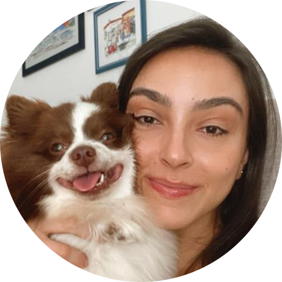

|  |
Janaina de Oliveira Muniz LyraMsc in Biotechnology, BSc in Biological Sciences, Portuary and Frontend student |
| 2022 | Technical Degree in Cargo Shipping Stowage | OGMO |
| 2015 - 2016 | Biotechnology Master degree | UFES |
| 2012 - 2013 | Exchange Program | USNW |
| 2009 - 2013 | Bachelor of Biological Sciences | UFMG |
Análise técnica de processos de Outorga de Água; Gestão de Recursos Hídricos; Gestão Processual; Elaboração de pareceres técnicos, ofícios, portarias de outorga, certidões de dispensa de outorga entre outros; Atendimento à demandas do Ministério Publico, requerentes entre outros; e demais atividades inerentes à outorga de recursos hídricos
Gerenciamento de projetos; Gestão de pessoas; Assessoria técnica ambiental.
Licenciamento ambiental; Análise e gestão de projetos ambientais; Assessoria técnica ambiental; Promoção de atividades relativas à preservação, recuperação, manejo e uso adequado dos recursos hídricos, solo e floresta; Organização de cursos e eventos
| Portuguese ⭐⭐⭐⭐⭐ |
| English ⭐⭐⭐⭐⭐ |
| French ⭐ |
| Spanish ⭐⭐ |